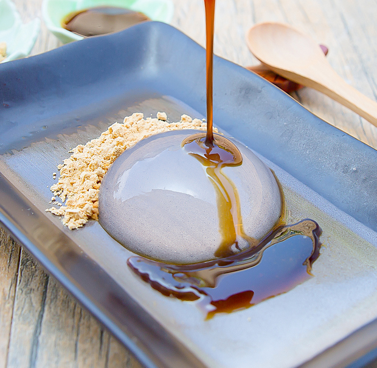

Raindrop Cake
Ingredients
3/4 cup water
1/8 tsp + 1/16 tsp agar powder
Toppings
1/2- 1 tbsp roasted soybean flour
1-2 tbsp black sugar syup
Preperation Time - 10 mins
Instructions
-
In a small saucepan, add agar powder and water and stir with a spatula a
few times, until the agar powder dissolves into the water.
-
Turn your stovetop to medium heat and bring the agar water mixture to a
boil. Maintaining a medium heat level, allow mixture to boil
(without a lid) for one minute, then turn off heat. Try to be as accurate
with the timing as possible. If you don't heat long enough, your agar won't
be fully dissolved. If you cook too long, your mixture will condense down
too much. Use a spatula to stir the mixture a few times. Pour mixture into
molds. You should have enough to fill exactly two cavities if you are using
the silicone molds I used.
-
Place molds into the fridge to set. I recommend letting them set
overnight, or at least 10 hours. When they are ready, they should
easily slide out just by you slightly tilting the molds. Do not take the
cakes out of the fridge until you are ready to serve because they will start
to melt after 20-30 minutes. Add your cakes to a plate. Add some soybean
flour to your plate and drizzle black sugar syrup on top of the cake or on
the side.
